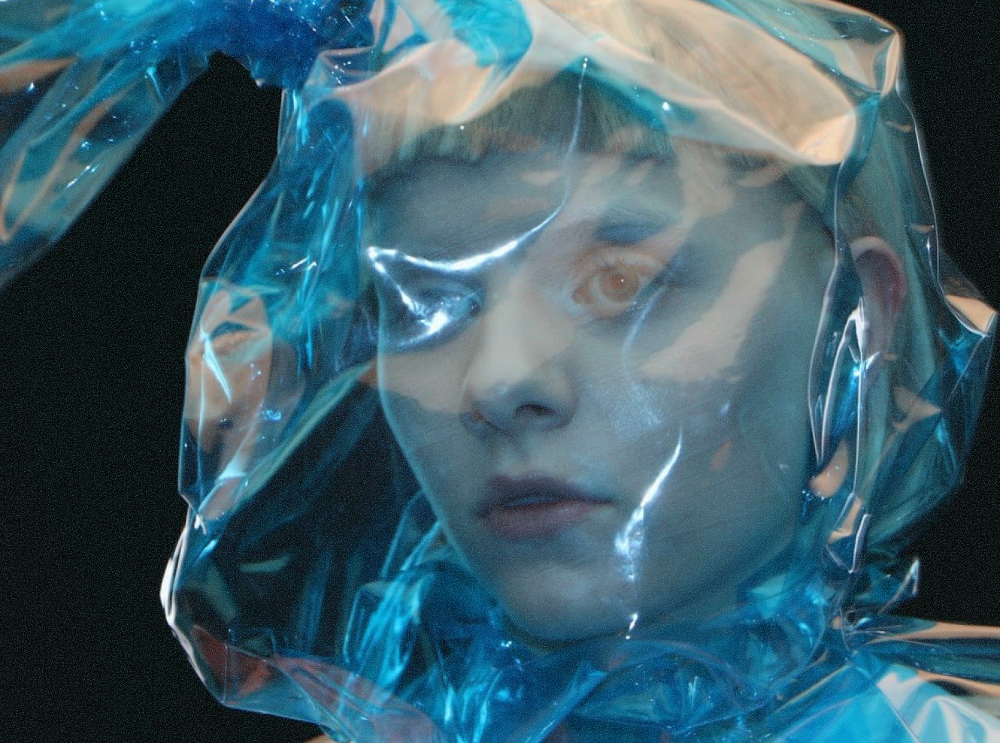

AURORA
ALL IS SOFT
ALL IS SOFT
ALL IS SOFT
ALL IS SOFT
INSIDE
> initializing audio persona: AURORA.exe
> loading vocal signature... complete
> accessing dreamwave neural net... ✓
> syncing pulse with solar rhythm...
> rendering ambient memory layer... done
> preparing stage: ethercore v3.2
> connecting to frequency: 11.11 MHz
> transmitting: aurora_sequence_∞
> user_input: listen
> :: unlocking echo chamber
> :: soundscape unfolding...
> calling mothership... <signal found>
> transfering soul